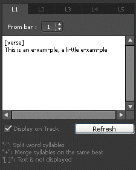
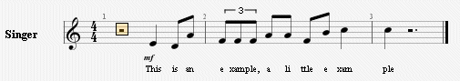

Um Texte hinzufügen gehen Sie bitte zur Welt :Songtexte ; diese werden automatisch zur ausgewählten Spur hingefügt.
Damit kõnnen Sie leicht den Text bearbeiten (mit Ausschneiden/Kopieren/Einfügen) und ihn in Abschnitten organisieren (Strophen, Refrain...).


Zuerst müssen Sie eine Spur wählen, damit der Songtext in der Partitur an der richtigen Stelle erscheint. Der eingegebene Text wird automatisch mit der Spur abgeglichen. In Guitar Pro gibt es ein paar besondere syntaktische Eingabemõglichkeiten, um Ihren Text mit der Spurausgabe entsprechend Ihren Wünschen, formatieren zu kõnnen (siehe Pkt. 4 weiter unten).
Normalerweise werden Songtexte in die Melodiespur eingefügt, aber Sie kõnnen sie auch in eine Instrumentenspur einfügen. Wahrscheinlich werden Sie dann aber einige Korrekturen an der Textausrichtung vornehmen müssen, denn es wäre sehrüberraschend, wenn jeder Anschlag auf genau eine Silbe passen würde.
Beachten Sie bitte auch, dass Sie den Text nicht mit einer Spur verknüpfen müssen, wenn Sie die Melodie des Liedes nicht kennen.
Sie kõnnen bis zu 5 Textzeilen in die ausgewählte Spur einfügen, welche dann untereinander angezeigt werden.
Die Texteingabe muss nicht von Anfang an für den ersten Takt erfolgen, sondern kann mit einem beliebigen Takt beginnen und das unterschiedlich für alle fünf Zeilen. So müssen Sie zum Beispiel keine Leerzeichen einfügen, falls der Text erst mit einem späteren Takt beginnen soll.
In dem rechteckigen Editfeld fügen Sie Ihren Songtext ein.
In Guitar Pro wird automatisch jede Silbe des eingegebenen Textes mit einem Anschlag in der ausgewählten Spur verknüpft. Ein Silbenwechsel wird durch die Eingabe eines LEERZEICHENS " " oder eines TRENNSTRICHS "-" erkannt.
Indem Sie einen Bindestrich einfügen, kõnnen Sie somit ein Wort in zwei Silben teilen. Falls Ihnen die automatische Aufteilung zweier Wõrter auf jeweils zwei Anschläge durch Guitar Pro missfällt, kõnnen Sie die beiden Wõrter durch ein PLUSZEICHEN "+" verknüpfen, indem Sie das Leerzeichen damit ersetzen.
Um einigen Anschlägen keinen Text zuzuordnen, geben Sie einfach mehrereLeerzeichen oder Trennstriche hintereinander ein.
Zeilenumbrüche werden wie Leertasten behandelt, jedoch werden mehrere Zeilenumbrüche nur als einen gezählt. Damit kõnnen Sie Ihren Text ohne weitere Probleme eingeben.
Texteingaben zwischen KLAMMERN "[…]" werden nicht in der Partitur angezeigt. Somit kõnnen Sie eckige Klammern für Kommentare, oder oderüberschriften Ihrer Abschnitte, wie ([INTRO], [REFRAIN]… ) verwenden.